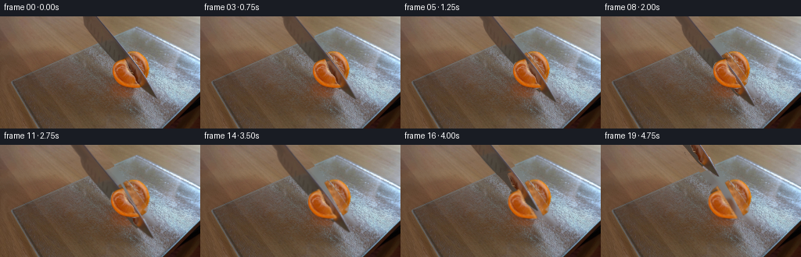
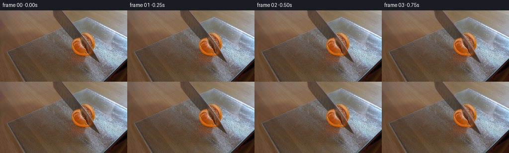

CODING AGENTS AS PIXEL WORLD MODELS
traex/GPT-6.1-Sol · 0040
点击播放 · 原生 RGB 像素
逐轮保存的候选
回放视频、检查图与代码变化。
每份候选均可单独播放。实际图片检查记录在下方工具轨迹中。
候选 01播放与检查图
点击播放 · 原生 RGB 像素


展开代码变化
--- 上一保存版本
+++ 本次保存版本
@@ -0,0 +1,198 @@
+from pathlib import Path
+import numpy as np
+from PIL import Image, ImageDraw
+import cv2
+from scipy import ndimage
+import artifact_io
+
+ROOT = Path(__file__).resolve().parent
+H, W = 144, 256
+Y, X = np.mgrid[:H, :W].astype(np.float32)
+
+
+def polygon(points, scale=4):
+ im = Image.new('L', (W*scale, H*scale), 0)
+ ImageDraw.Draw(im).polygon([(round(x*scale),round(y*scale)) for x,y in points], fill=255)
+ return np.array(im.resize((W,H), Image.Resampling.LANCZOS)).astype(np.float32)/255
+
+
+def over(bg, rgb, a):
+ return bg*(1-a[...,None]) + rgb*a[...,None]
+
+
+def warp(rgb, mask, dx=0, dy=0, angle=0, center=(166,72)):
+ m=cv2.getRotationMatrix2D(center, angle, 1.)
+ m[:,2] += (dx,dy)
+ alpha=cv2.warpAffine(mask,m,(W,H),flags=cv2.INTER_LINEAR, borderMode=cv2.BORDER_CONSTANT)
+ prem=cv2.warpAffine(rgb*mask[...,None],m,(W,H),flags=cv2.INTER_LINEAR,borderMode=cv2.BORDER_CONSTANT)
+ return prem/np.maximum(alpha[...,None],1e-6), alpha
+
+
+def smooth(t):
+ t=np.clip(t,0,1)
+ return t*t*(3-2*t)
+
+
+def build():
+ A=np.array(Image.open(ROOT/'first_frame.png').convert('RGB')).astype(np.float32)
+ rng=np.random.default_rng(781)
+ # The blade is an obliquely viewed, tapering steel knife. Its far edge
+ # has a narrow specular highlight; the fruit occludes its lower near side.
+ blade=polygon([(105.5,-12),(115,-12),(124.4,0),(132.9,11),
+ (141.5,21),(149.6,31),(157.8,41),(166.1,51),(174.5,61),
+ (181.7,71),(188.9,81),(194.5,92),(199.8,101.5),(200.4,104.3),
+ (197.0,105.1),(192.5,102.0),(182.7,95.8),(173.0,87),
+ (164.7,77),(156.4,67),(147.5,58),(139.0,49),(130.8,40),
+ (123.0,31),(115.5,22),(109.5,13),(106.5,5)])
+ fruit=polygon([(165.2,44.2),(172.0,43.9),(177.7,46.1),
+ (183.4,50.4),(187.4,56.7),(189.7,62.3),(191.0,67.3),
+ (190.7,73.5),(189.1,79.4),(186.5,86.5),(180.0,91.5),
+ (173.0,93.4),(163.0,91.9),(155.1,88.0),(149.5,83.0),
+ (145.3,77.4),(142.8,70.7),(143.2,65.4),(145.4,59.5),
+ (150.0,53.7),(156.2,48.9),(161.0,45.9)])
+ front_visible=polygon([(158,53.4),(164.8,53.6),(166.0,54.8),
+ (161.0,56.3),(161.5,59.5),(163.0,63.3),(164.3,66.2),
+ (165.4,69.2),(166.5,72.0),(170.0,75.6),(172.7,78.1),
+ (174.0,82.6),(174.6,85.1),(178.8,88.6),(181.4,90.0),
+ (178.2,92.0),(171.8,93.5),(162.7,91.8),(155.0,88.0),
+ (149.1,82.7),(145.2,77.1),(142.9,70.7),(143.3,65.1),
+ (145.5,60.0),(149.0,57.0),(153.8,54.9)]) * fruit
+ # Reconstruct just the surfaces hidden by the moving foreground.
+ effective_blade=blade*(1-front_visible)
+ removal=np.maximum(effective_blade, fruit)
+ bg=cv2.inpaint(A.astype(np.uint8), (removal>.03).astype(np.uint8)*255, 5, cv2.INPAINT_TELEA).astype(np.float32)
+ # Preserve the grain of the worktop rather than smoothing its narrow
+ # newly uncovered strip. The glass board's rear edge is kept stationary.
+ board_edge=203.7-2.12*Y
+ wood=(X<board_edge-1.0) | (Y<13.2)
+ wood_mask=effective_blade*wood*(Y<49)
+ sample_x=np.clip(X-33,0,W-1)
+ wood_tex=cv2.remap(A,sample_x,Y,cv2.INTER_LINEAR)
+ # Match the illumination using the intact wood on the two sides.
+ for y in range(49):
+ xs=np.where(wood_mask[y]>.05)[0]
+ if len(xs):
+ lo,hi=xs[0],xs[-1]
+ l=max(0,lo-4)
+ rr=min(W-1,hi+6)
+ target=np.mean(A[y,max(0,l-2):l+2],axis=0)
+ source=np.mean(wood_tex[y,lo:hi+1],axis=0)
+ wood_tex[y] += target-source
+ bg=over(bg,wood_tex,wood_mask)
+ # Hidden flesh is completed with orange texture sampled from the fruit
+ # itself, and fine, deterministic pulp structure, not a new object.
+ missing=fruit*(1-front_visible)*blade
+ known=(fruit>.75)&(missing<.1)
+ _,ix=ndimage.distance_transform_edt(~known,return_indices=True)
+ nearest=A[ix[0],ix[1]]
+ nearest=cv2.GaussianBlur(nearest,(0,0),.65)
+ theta=np.arctan2((Y-66)/.91,X-172)
+ radial=np.sqrt((X-172)**2+((Y-66)/.91)**2)
+ n=rng.normal(0,1,(H,W)).astype(np.float32)
+ n1=cv2.GaussianBlur(n,(0,0),.60)
+ n2=cv2.GaussianBlur(n,(0,0),1.8)
+ # Delicate segment partitions and juice vesicles.
+ membranes=np.exp(-((np.sin(theta*5.0+.23))/.065)**2)
+ membranes*=smooth(radial/5)* (1-smooth((radial-20)/4))
+ vesicle=np.sin(2.9*radial+1.2*np.sin(theta*15))*np.sin(theta*22+radial*.3)
+ pulp=np.stack([184+15*n1+18*n2+6*vesicle,
+ 106+13*n1+13*n2+4*vesicle,
+ 40+10*n1+9*n2+3*vesicle],axis=-1)
+ pulp+=membranes[...,None]*np.array([24,31,31],np.float32)
+ completed=nearest*.65+pulp*.35
+ dd=ndimage.distance_transform_edt(~known)
+ amt=missing*smooth(dd/2.4)
+ fruit_rgb=over(A,completed,amt)
+ # Bright rims belong to the freshly cut faces, revealed only as the
+ # two quarters part after the blade has reached the glass.
+ cut=155.0+.575*(Y-47)
+ front_part=fruit*np.clip((cut-X+.5),0,1)
+ rear_part=fruit*(1-np.clip((cut-X+.5),0,1))
+ # The obscured steel is filled from the blade face's own measured tone.
+ steel=A.copy()
+ hidden=blade*front_visible
+ steel_base=np.empty_like(A)
+ # Most of the steel is dimly reflective, with a fine original grain.
+ steel_base[:,:,0]=75+3*n1+.08*(58-Y)
+ steel_base[:,:,1]=65+2*n1+.07*(58-Y)
+ steel_base[:,:,2]=56+2*n1+.06*(58-Y)
+ steel=over(steel,steel_base,hidden)
+ # Extend the cropped blade a little upward, to allow the downstroke
+ # without a spurious horizontal edge appearing at the image boundary.
+ pad=40
+ steel_ext=np.pad(steel,((pad,0),(0,0),(0,0)),mode='edge')
+ blade_ext=np.pad(blade,((pad,0),(0,0)),mode='constant')
+ for yy in range(-pad,0):
+ xx0=105.5+.75*yy
+ xx1=124.4+.81*yy
+ row=np.clip(np.minimum(X[0]-xx0+.5,xx1-X[0]+.5),0,1)
+ blade_ext[yy+pad]=row
+ orig_x=np.clip(X[0]-.78*yy,0,W-1)
+ for c in range(3):
+ steel_ext[yy+pad,:,c]=np.interp(orig_x,np.arange(W),A[0,:,c])
+ # A single continuous downstroke, pause at the board, then withdrawal.
+ tkeys=np.array([0,.5,1.25,2.25,3.0,3.25,3.75,4.25,4.75])
+ dkeys=np.array([0,1.0,5.4,12.8,16.0,15.0,-5.0,-36.,-64.])
+ xkeys=np.array([0,-.25,-1.1,-3.4,-4.0,-4.3,-16.0,-33.,-49.])
+ from scipy.interpolate import PchipInterpolator
+ dpath=PchipInterpolator(tkeys,dkeys)
+ xpath=PchipInterpolator(tkeys,xkeys)
+ frames=[]
+ for f in range(20):
+ t=f/4
+ cutprog=smooth((t-1.0)/2.0)
+ part=smooth((t-2.15)/1.55)
+ settle=smooth((t-3.9)/.7)
+ front_dx=-6.2*part
+ front_dy=3.0*part
+ front_rot=2.0*part
+ rear_dx=1.8*part
+ rear_dy=-.45*part
+ # A soft, local contact shadow tracks the parting fruit.
+ frame=bg.copy()
+ # Retain existing lighting and reflections everywhere else.
+ footprint=np.exp(-(((X-(165+front_dx*.55))/23)**2+((Y-(92+front_dy*.45))/5)**2)*1.9)
+ newshadow=(footprint*.10*part)[...,None]
+ frame*=1-newshadow
+ front_tex=fruit_rgb.copy()
+ rear_tex=fruit_rgb.copy()
+ # Narrow, wet pith edges on either side of the cut, with texture
+ # borrowed from the original orange rather than flat painted lines.
+ face_band=np.exp(-((X-cut+1.8)/2.3)**2)*fruit
+ face_light=np.stack([203+7*n1+4*vesicle,
+ 140+10*n1+4*vesicle,
+ 78+8*n1+3*vesicle],-1)
+ core=face_band*part*.73
+ front_tex=over(front_tex,face_light,core)
+ rear_band=np.exp(-((X-cut-2.0)/3.3)**2)*fruit
+ rear_tex=over(rear_tex,pulp+np.array([7,9,7]),rear_band*part*.56)
+ # The near quarter lies in front of the blade, the rear quarter
+ # behind it. The small newly exposed surfaces are below the steel.
+ br,bm=warp(rear_tex,rear_part,rear_dx,rear_dy,-.6*part)
+ frame=over(frame,br,bm)
+ fr,fm=warp(front_tex,front_part,front_dx,front_dy,front_rot)
+ frame=over(frame,fr,fm)
+ dy=float(dpath(t)); dx=float(xpath(t))
+ # Tiny longitudinal motion is part of the continuous cutting stroke.
+ saw=np.sin(t*5.4)*.35*np.sin(np.pi*np.clip(t/3.1,0,1)) if t<3.1 else 0.
+ dx+=saw*.7; dy+=saw
+ m=np.array([[1,0,dx],[0,1,dy-pad]],np.float32)
+ ba=cv2.warpAffine(blade_ext,m,(W,H),flags=cv2.INTER_LINEAR)
+ bp=cv2.warpAffine(steel_ext*blade_ext[...,None],m,(W,H),flags=cv2.INTER_LINEAR)
+ bc=bp/np.maximum(ba[...,None],1e-6)
+ frame=over(frame,bc,ba)
+ vismask=front_visible*front_part
+ vr,vm=warp(front_tex,vismask,front_dx,front_dy,front_rot)
+ frame=over(frame,vr,vm)
+ # Initially the shaded rind and knife match the photographed setup.
+ # A subpixel feather avoids aliasing at the original matte boundaries.
+ if f<3:
+ frame=A*(1-smooth(f/3))+frame*smooth(f/3)
+ frame=np.clip(np.rint(frame),0,255).astype(np.uint8)
+ if f==0: frame=A.astype(np.uint8)
+ frames.append(frame)
+ return np.stack(frames)
+
+if __name__=='__main__':
+ frames=build()
+ artifact_io.save(frames,ROOT)
可观测工具轨迹
实际执行的命令与返回图片。
命令 1exit 0
/bin/bash -lc 'ls -la && cat prompt.txt && cat GENERATION_RULES.md'
命令 2exit 0
/bin/bash -lc "cat artifact_io.py && python - <<'PY'
from PIL import Image
import numpy as np
im=np.array(Image.open('first_frame.png'))
print(im.shape)
for y in range(0,144,4):
s=''
for x in range(0,256,4):
r,g,b=im[y:y+4,x:x+4,:3].mean((0,1))
if r>g*1.3 and r>b*1.8: c='O'
elif r>g*1.12 and r>b*1.18: c='s'
elif max(r,g,b)-min(r,g,b)<15:
c=' .:-=+*#%@'[int((r+g+b)/3*9/255)]
else:c='~'
s+=c
print(f'{y:3}',s)
PY"命令 3exit 0
/bin/bash -lc "python - <<'PY'
from PIL import Image
import numpy as np
im=Image.open('first_frame.png').convert('RGB')
q=im.quantize(colors=18,method=Image.Quantize.MEDIANCUT)
p=np.array(q.getpalette()).reshape(-1,3)
a=np.array(q)
chars='0123456789ABCDEFGH'
for i in range(18):print(chars[i],p[i],(a==i).sum())
for y in range(0,144,2):
print(f'{y:3} '+''.join(chars[a[y:y+2,x:x+2].reshape(-1)[0]] for x in range(0,256,2)))
PY"命令 4exit 0
/bin/bash -lc "python - <<'PY'
from PIL import Image
import numpy as np
im=np.array(Image.open('first_frame.png'))
print('range',im.min((0,1)), im.max((0,1)))
for y in range(0,144,8):
print('Y',y,' '.join(f'{x}:{tuple(im[y,x])}' for x in range(0,256,16)))
PY"命令 5exit 0
/bin/bash -lc "python - <<'PY'
import numpy as np
from PIL import Image
from scipy import ndimage
A=np.array(Image.open('first_frame.png')).astype(float);r,g,b=A.transpose(2,0,1)
# compact classification, 1 pixel wide in the interesting region
for y in range(8,112,2):
s=''
for x in range(100,256,2):
rr,gg,bb=A[y:y+2,x:x+2].mean((0,1))
if rr-gg>45 and rr-bb>65:c='O' if rr>140 else 'o'
elif rr-gg>15 and rr-bb>25:c=':' if rr>115 else '.'
elif bb>rr+8:c='C' if bb>160 else 'c'
else:c='0123456789'[min(9,int((rr+gg+bb)/3/25.6))]
s+=c
print(y,s)
print('orange extents:')
for y in range(35,99,2):
xx=np.where((r[y]-g[y]>45)&(r[y]-b[y]>65)&(r[y]>130))[0];xx=xx[(xx>120)&(xx<200)]
print(y,xx.tolist())
PY"命令 6exit 0
/bin/bash -lc "python - <<'PY'
import numpy as np
from PIL import Image
A=np.array(Image.open('first_frame.png')).astype(float)
# linear stretch grayscale for each relevant region; dither free ascii
for (x0,y0,x1,y1) in [(95,0,200,54),(138,40,198,106),(160,10,256,90)]:
print('REGION',x0,y0,x1,y1)
v=A[y0:y1,x0:x1].mean(-1)
chars=' .,:;irsXA253hMHGS#9B&@'
for y in range(0,len(v),1):
print(f'{y+y0:3} '+''.join(chars[int(np.clip((p-20)/180,0,.999)*(len(chars)-1))] for p in v[y]))
PY"命令 7exit 0
/bin/bash -lc "python - <<'PY'
import numpy as np
from PIL import Image
A=np.array(Image.open('first_frame.png')).astype(int)
for y in [0,10,20,30,40,48,52,54,56,58,60,62,66,70,74,78,82,86,90,94,98,102,106]:
x0=100 if y<40 else 132
print('Y',y)
print(' '.join(f'{x}:{r},{g},{b}' for x,(r,g,b) in enumerate(A[y,x0:202],x0)))
PY"命令 8exit 0
/bin/bash -lc "python - <<'PY'
import cv2, scipy, numpy
print('cv2',cv2.__version__)
PY"命令 9exit 0
/bin/bash -lc "cat > generate.py <<'PY'
from pathlib import Path
import numpy as np
from PIL import Image, ImageDraw
import cv2
from scipy import ndimage
import artifact_io
ROOT = Path(__file__).resolve().parent
H, W = 144, 256
Y, X = np.mgrid[:H, :W].astype(np.float32)
def polygon(points, scale=4):
im = Image.new('L', (W*scale, H*scale), 0)
ImageDraw.Draw(im).polygon([(round(x*scale),round(y*scale)) for x,y in points], fill=255)
return np.array(im.resize((W,H), Image.Resampling.LANCZOS)).astype(np.float32)/255
def over(bg, rgb, a):
return bg*(1-a[...,None]) + rgb*a[...,None]
def warp(rgb, mask, dx=0, dy=0, angle=0, center=(166,72)):
m=cv2.getRotationMatrix2D(center, angle, 1.)
m[:,2] += (dx,dy)
alpha=cv2.warpAffine(mask,m,(W,H),flags=cv2.INTER_LINEAR, borderMode=cv2.BORDER_CONSTANT)
prem=cv2.warpAffine(rgb*mask[...,None],m,(W,H),flags=cv2.INTER_LINEAR,borderMode=cv2.BORDER_CONSTANT)
return prem/np.maximum(alpha[...,None],1e-6), alpha
def smooth(t):
t=np.clip(t,0,1)
return t*t*(3-2*t)
def build():
A=np.array(Image.open(ROOT/'first_frame.png').convert('RGB')).astype(np.float32)
rng=np.random.default_rng(781)
# The blade is an obliquely viewed, tapering steel knife. Its far edge
# has a narrow specular highlight; the fruit occludes its lower near side.
blade=polygon([(105.5,-12),(115,-12),(124.4,0),(132.9,11),
(141.5,21),(149.6,31),(157.8,41),(166.1,51),(174.5,61),
(181.7,71),(188.9,81),(194.5,92),(199.8,101.5),(200.4,104.3),
(197.0,105.1),(192.5,102.0),(182.7,95.8),(173.0,87),
(164.7,77),(156.4,67),(147.5,58),(139.0,49),(130.8,40),
(123.0,31),(115.5,22),(109.5,13),(106.5,5)])
fruit=polygon([(165.2,44.2),(172.0,43.9),(177.7,46.1),
(183.4,50.4),(187.4,56.7),(189.7,62.3),(191.0,67.3),
(190.7,73.5),(189.1,79.4),(186.5,86.5),(180.0,91.5),
(173.0,93.4),(163.0,91.9),(155.1,88.0),(149.5,83.0),
(145.3,77.4),(142.8,70.7),(143.2,65.4),(145.4,59.5),
(150.0,53.7),(156.2,48.9),(161.0,45.9)])
front_visible=polygon([(158,53.4),(164.8,53.6),(166.0,54.8),
(161.0,56.3),(161.5,59.5),(163.0,63.3),(164.3,66.2),
(165.4,69.2),(166.5,72.0),(170.0,75.6),(172.7,78.1),
(174.0,82.6),(174.6,85.1),(178.8,88.6),(181.4,90.0),
(178.2,92.0),(171.8,93.5),(162.7,91.8),(155.0,88.0),
(149.1,82.7),(145.2,77.1),(142.9,70.7),(143.3,65.1),
(145.5,60.0),(149.0,57.0),(153.8,54.9)]) * fruit
# Reconstruct just the surfaces hidden by the moving foreground.
effective_blade=blade*(1-front_visible)
removal=np.maximum(effective_blade, fruit)
bg=cv2.inpaint(A.astype(np.uint8), (removal>.03).astype(np.uint8)*255, 5, cv2.INPAINT_TELEA).astype(np.float32)
# Preserve the grain of the worktop rather than smoothing its narrow
# newly uncovered strip. The glass board's rear edge is kept stationary.
board_edge=203.7-2.12*Y
wood=(X<board_edge-1.0) | (Y<13.2)
wood_mask=effective_blade*wood*(Y<49)
sample_x=np.clip(X-33,0,W-1)
wood_tex=cv2.remap(A,sample_x,Y,cv2.INTER_LINEAR)
# Match the illumination using the intact wood on the two sides.
for y in range(49):
xs=np.where(wood_mask[y]>.05)[0]
if len(xs):
lo,hi=xs[0],xs[-1]
l=max(0,lo-4)
rr=min(W-1,hi+6)
target=np.mean(A[y,max(0,l-2):l+2],axis=0)
source=np.mean(wood_tex[y,lo:hi+1],axis=0)
wood_tex[y] += target-source
bg=over(bg,wood_tex,wood_mask)
# Hidden flesh is completed with orange texture sampled from the fruit
# itself, and fine, deterministic pulp structure, not a new object.
missing=fruit*(1-front_visible)*blade
known=(fruit>.75)&(missing<.1)
_,ix=ndimage.distance_transform_edt(~known,return_indices=True)
nearest=A[ix[0],ix[1]]
nearest=cv2.GaussianBlur(nearest,(0,0),.65)
theta=np.arctan2((Y-66)/.91,X-172)
radial=np.sqrt((X-172)**2+((Y-66)/.91)**2)
n=rng.normal(0,1,(H,W)).astype(np.float32)
n1=cv2.GaussianBlur(n,(0,0),.60)
n2=cv2.GaussianBlur(n,(0,0),1.8)
# Delicate segment partitions and juice vesicles.
membranes=np.exp(-((np.sin(theta*5.0+.23))/.065)**2)
membranes*=smooth(radial/5)* (1-smooth((radial-20)/4))
vesicle=np.sin(2.9*radial+1.2*np.sin(theta*15))*np.sin(theta*22+radial*.3)
pulp=np.stack([184+15*n1+18*n2+6*vesicle,
106+13*n1+13*n2+4*vesicle,
40+10*n1+9*n2+3*vesicle],axis=-1)
pulp+=membranes[...,None]*np.array([24,31,31],np.float32)
completed=nearest*.65+pulp*.35
dd=ndimage.distance_transform_edt(~known)
amt=missing*smooth(dd/2.4)
fruit_rgb=over(A,completed,amt)
# Bright rims belong to the freshly cut faces, revealed only as the
# two quarters part after the blade has reached the glass.
cut=155.0+.575*(Y-47)
front_part=fruit*np.clip((cut-X+.5),0,1)
rear_part=fruit*(1-np.clip((cut-X+.5),0,1))
# The obscured steel is filled from the blade face's own measured tone.
steel=A.copy()
hidden=blade*front_visible
steel_base=np.empty_like(A)
# Most of the steel is dimly reflective, with a fine original grain.
steel_base[:,:,0]=75+3*n1+.08*(58-Y)
steel_base[:,:,1]=65+2*n1+.07*(58-Y)
steel_base[:,:,2]=56+2*n1+.06*(58-Y)
steel=over(steel,steel_base,hidden)
# Extend the cropped blade a little upward, to allow the downstroke
# without a spurious horizontal edge appearing at the image boundary.
pad=40
steel_ext=np.pad(steel,((pad,0),(0,0),(0,0)),mode='edge')
blade_ext=np.pad(blade,((pad,0),(0,0)),mode='constant')
for yy in range(-pad,0):
xx0=105.5+.75*yy
xx1=124.4+.81*yy
row=np.clip(np.minimum(X[0]-xx0+.5,xx1-X[0]+.5),0,1)
blade_ext[yy+pad]=row
orig_x=np.clip(X[0]-.78*yy,0,W-1)
for c in range(3):
steel_ext[yy+pad,:,c]=np.interp(orig_x,np.arange(W),A[0,:,c])
# A single continuous downstroke, pause at the board, then withdrawal.
tkeys=np.array([0,.5,1.25,2.25,3.0,3.25,3.75,4.25,4.75])
dkeys=np.array([0,1.0,5.4,12.8,16.0,15.0,-5.0,-36.,-64.])
xkeys=np.array([0,-.25,-1.1,-3.4,-4.0,-4.3,-16.0,-33.,-49.])
from scipy.interpolate import PchipInterpolator
dpath=PchipInterpolator(tkeys,dkeys)
xpath=PchipInterpolator(tkeys,xkeys)
frames=[]
for f in range(20):
t=f/4
cutprog=smooth((t-1.0)/2.0)
part=smooth((t-2.15)/1.55)
settle=smooth((t-3.9)/.7)
front_dx=-6.2*part
front_dy=3.0*part
front_rot=2.0*part
rear_dx=1.8*part
rear_dy=-.45*part
# A soft, local contact shadow tracks the parting fruit.
frame=bg.copy()
# Retain existing lighting and reflections everywhere else.
footprint=np.exp(-(((X-(165+front_dx*.55))/23)**2+((Y-(92+front_dy*.45))/5)**2)*1.9)
newshadow=(footprint*.10*part)[...,None]
frame*=1-newshadow
front_tex=fruit_rgb.copy()
rear_tex=fruit_rgb.copy()
# Narrow, wet pith edges on either side of the cut, with texture
# borrowed from the original orange rather than flat painted lines.
face_band=np.exp(-((X-cut+1.8)/2.3)**2)*fruit
face_light=np.stack([203+7*n1+4*vesicle,
140+10*n1+4*vesicle,
78+8*n1+3*vesicle],-1)
core=face_band*part*.73
front_tex=over(front_tex,face_light,core)
rear_band=np.exp(-((X-cut-2.0)/3.3)**2)*fruit
rear_tex=over(rear_tex,pulp+np.array([7,9,7]),rear_band*part*.56)
# The near quarter lies in front of the blade, the rear quarter
# behind it. The small newly exposed surfaces are below the steel.
br,bm=warp(rear_tex,rear_part,rear_dx,rear_dy,-.6*part)
frame=over(frame,br,bm)
fr,fm=warp(front_tex,front_part,front_dx,front_dy,front_rot)
frame=over(frame,fr,fm)
dy=float(dpath(t)); dx=float(xpath(t))
# Tiny longitudinal motion is part of the continuous cutting stroke.
saw=np.sin(t*5.4)*.35*np.sin(np.pi*np.clip(t/3.1,0,1)) if t<3.1 else 0.
dx+=saw*.7; dy+=saw
m=np.array([[1,0,dx],[0,1,dy-pad]],np.float32)
ba=cv2.warpAffine(blade_ext,m,(W,H),flags=cv2.INTER_LINEAR)
bp=cv2.warpAffine(steel_ext*blade_ext[...,None],m,(W,H),flags=cv2.INTER_LINEAR)
bc=bp/np.maximum(ba[...,None],1e-6)
frame=over(frame,bc,ba)
vismask=front_visible*front_part
vr,vm=warp(front_tex,vismask,front_dx,front_dy,front_rot)
frame=over(frame,vr,vm)
# Initially the shaded rind and knife match the photographed setup.
# A subpixel feather avoids aliasing at the original matte boundaries.
if f<3:
frame=A*(1-smooth(f/3))+frame*smooth(f/3)
frame=np.clip(np.rint(frame),0,255).astype(np.uint8)
if f==0: frame=A.astype(np.uint8)
frames.append(frame)
return np.stack(frames)
if __name__=='__main__':
frames=build()
artifact_io.save(frames,ROOT)
PY
python generate.py"命令 10exit 0
/bin/bash -lc "python - <<'PY'
import numpy as np
from PIL import Image
for f in [0,5,9,12,16,19]:
A=np.array(Image.open(f'frames/{f:02}.png')).astype(float)
print('\\nFRAME',f)
for y in range(34,110,2):
s=''
for x in range(110,214,2):
rr,gg,bb=A[y:y+2,x:x+2].mean((0,1))
if rr-gg>45 and rr-bb>65:c='O' if rr>140 else 'o'
elif rr-gg>15 and rr-bb>25:c=':' if rr>115 else '.'
elif bb>rr+8:c='C' if bb>160 else 'c'
else:c='0123456789'[min(9,int((rr+gg+bb)/3/25.6))]
s+=c
print(f'{y:3}',s)
PY"命令 11exit 0
/bin/bash -lc "python - <<'PY'
from PIL import Image
import numpy as np
A=np.array(Image.open('frames/19.png'))
for y in [54,60,66,72,78,84,90]:
print(y,' '.join(f'{x}:{tuple(A[y,x])}' for x in range(136,194,3)))
print('delta statistics:')
for i in range(1,20):
a=np.array(Image.open(f'frames/{i:02d}.png')).astype(int);b=np.array(Image.open(f'frames/{i-1:02d}.png')).astype(int)
print(i,np.abs(a-b).mean(),(np.max(np.abs(a-b),-1)>30).sum())
PY"命令 12exit 0
/bin/bash -lc "python - <<'PY'
import numpy as np
from PIL import Image
arr=np.stack([np.array(Image.open(f'frames/{i:02}.png')) for i in range(20)])
first=np.array(Image.open('first_frame.png').convert('RGB'))
assert arr.shape==(20,144,256,3)
assert arr.dtype==np.uint8
assert np.array_equal(arr[0],first)
p=np.load('pixels.npz')['pixels']
assert p.shape==(144,256,20)
print('Verified 20 RGB frames, 256x144, first frame exact.')
print('Outputs: pixels.npz, index.html, frames/, inspection.png')
PY"保存候选 1 份；完成命令 12 次；可验证图片返回 0 张。原始 API 响应与完整日志保留在本地。